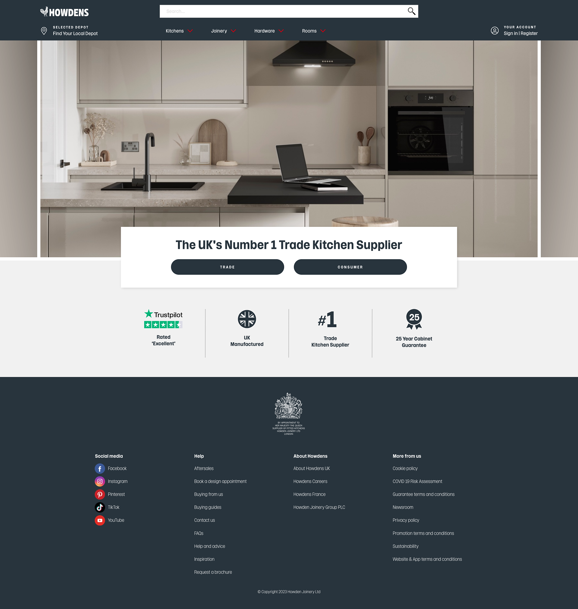
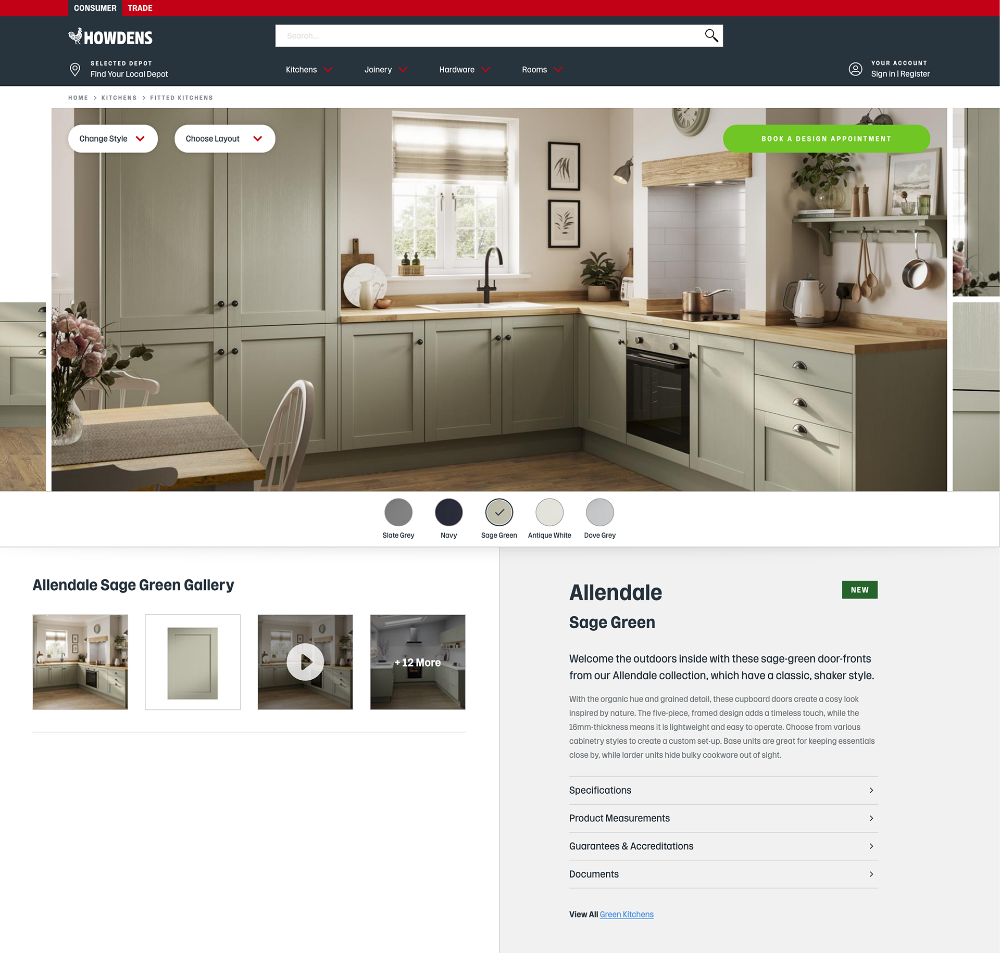
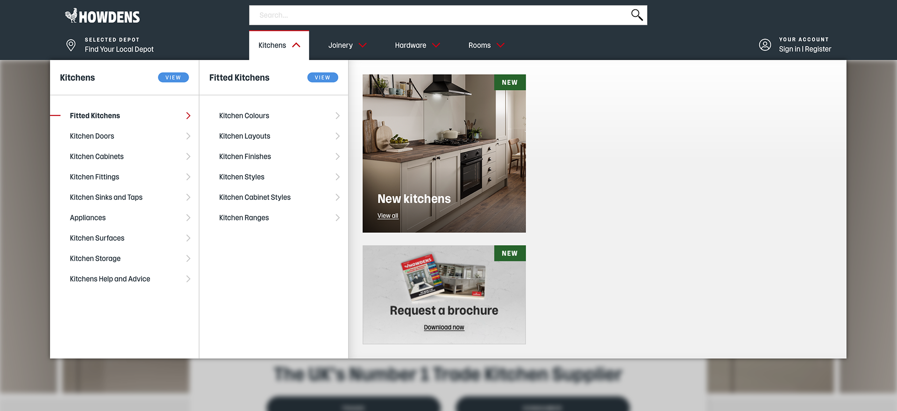
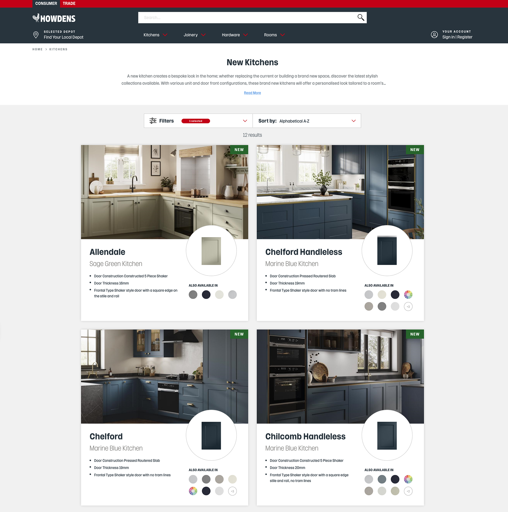
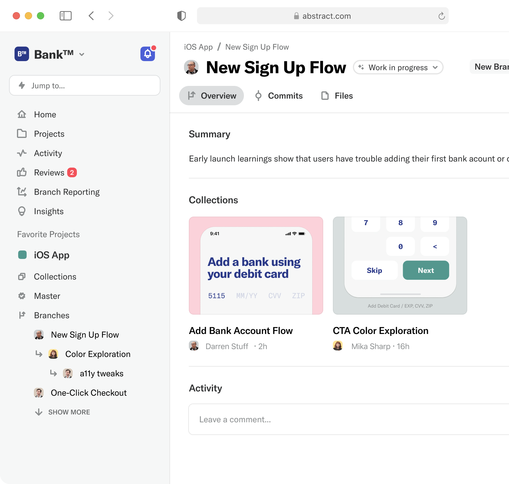
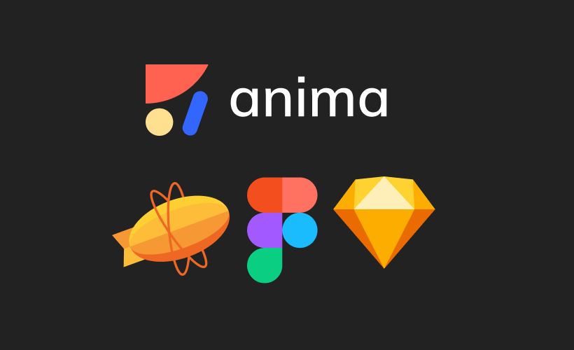

This is a ready-to-print page
Howden Joinery Group Plc
Improving accessibility and conversion
Howden Joinery Group Plc is a well-known UK business specialising in kitchens, joinery products, and home improvement solutions. The work focused on updating the company website, supporting the design system, and contributing to marketing materials that strengthened the digital brand experience. The aim was to improve accessibility, consistency, and performance across digital touchpoints while helping the business attract and support more visitors online.
The challenge
The challenge involved maintaining and improving a large-scale digital experience while keeping everything aligned with a complex and regularly updated design system. The website and supporting assets needed to remain visually polished, accessible, and easy to use, while also supporting evolving marketing goals and user needs. This meant balancing design quality, technical handoff, and consistency across multiple teams and outputs.


Howden Joinery Group Plc website. Source image: Howden Joinery Group Plc.
My role
I worked across user interface design, user experience design, and graphic design, supporting updates to the Howden website, design system, and digital marketing materials. The role involved creating and refining digital experiences that were both practical and visually strong, while ensuring accessibility and consistency across the wider ecosystem.


Howden Joinery Group Plc website. Source image: Howden Joinery Group Plc.
Process and approach
At Howden Joinery Group Plc UK in Northampton, the focus was on maintenance and continuous improvement to boost visitor traffic on the company’s website and elevate marketing campaigns. Working to high standards, the design process used a complex and regularly updated design system, managed through Abstract, a versioning platform that supported collaboration and consistency across design work.
The workflow incorporated industry-standard tools such as Sketch, Figma, Anima, and Zeplin, helping streamline the design-to-development handoff with clarity and accuracy. These tools supported a polished and professional online presence while enabling continuous updates and enhancements to the website in response to user needs and business priorities.
Howden Joinery Group Plc website. Source image: Howden Joinery Group Plc.
Collaboration played a central role throughout. As part of the digital team, I worked alongside designers, marketing designers, UX designers, UX researchers, and product designers to keep websites, apps, and trader applications accessible, functional, and visually engaging. Research insights helped guide decisions, strengthen cross-team alignment, and ensure the user experience remained at the centre of the work.
A passionate and collaborative design team
Being part of the Howdens digital team meant contributing within a multidisciplinary environment where collaboration and research were essential. The work was shaped by shared standards, evolving user needs, and the goal of delivering accessible and effective digital experiences across multiple platforms.
Design systems at Howdens
The design system was a core part of maintaining quality and consistency across digital assets. Regularly updated with Abstract, it became the backbone of the design process. Working within this system gave valuable experience in creating, maintaining, and evolving robust design systems that adapt to changing user and business requirements.
Abstract is a powerful version control and collaboration platform specifically designed for design teams. It streamlines the process of managing design files by integrating seamlessly with tools like Sketch and Figma. Designers can create branches, make changes, and merge updates without overwriting previous versions, ensuring a transparent and organised workflow. Abstract allows teams to collaborate efficiently, review design changes, provide feedback, and maintain a complete version history in one place.
Abstract application. Version control for Sketch. Design together, in real time with version control for Sketch and collaborative workflows.

Abstract application user interface. Source image: Abstract application. Version control for Sketch.

Image of software used at Howdens: Anima, Zeplin, Figma and Sketch.
My contribution
My contribution focused on improving the quality, consistency, and accessibility of digital experiences across the Howden website and related assets. I supported the evolution of interfaces and design components, helping ensure that outputs remained aligned with the wider design system while also meeting practical business and user needs.
I worked across UI, UX, and graphic design, using tools such as Sketch, Figma, Anima, and Zeplin to create and refine work that could be handed over clearly to development teams. I also collaborated with multidisciplinary colleagues including designers, UX researchers, and product specialists, contributing to a digital experience that was more accessible, visually cohesive, and effective in supporting both users and the business.